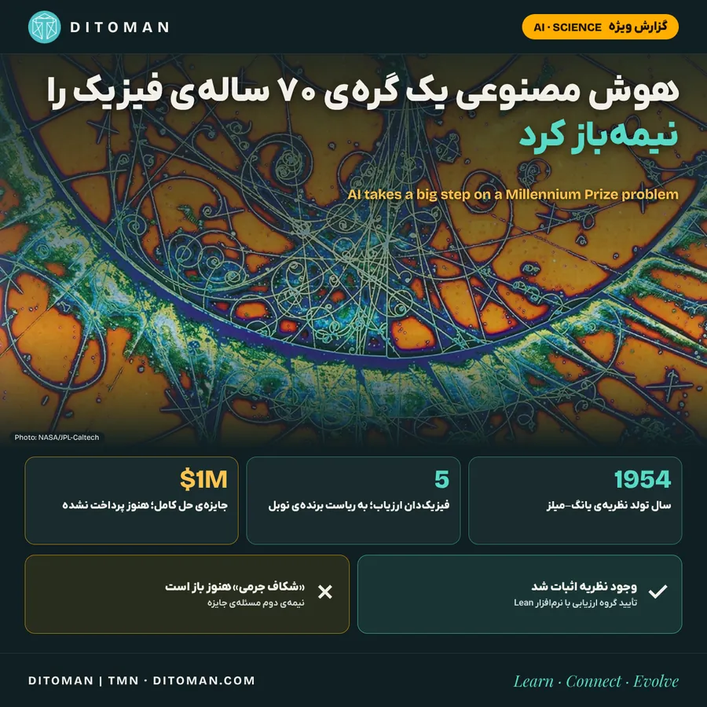
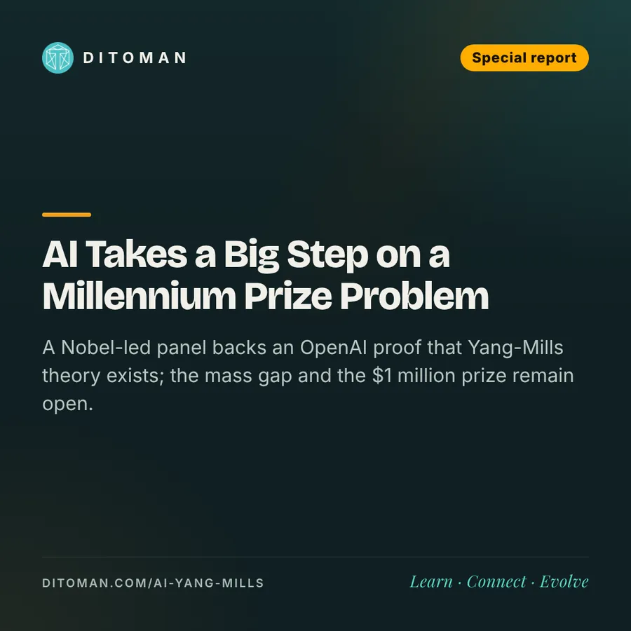

هوش مصنوعی یک گرهی ۷۰ سالهی فیزیک را نیمهباز کرد
AI takes a big step on a Millennium Prize problem
پنج فیزیکدان برجسته به ریاست برندهی نوبل، اثبات هوش مصنوعی OpenAI برای «وجود» نظریهی یانگ–میلز را تأیید کردند؛ اما «شکاف جرمی» و جایزهی یک میلیون دلاری هنوز باز است.
A Nobel-led panel backs an OpenAI proof that Yang-Mills theory exists; the mass gap and the $1 million prize remain open.
در یک نگاه
یک مدل منتشرنشدهی هوش مصنوعی OpenAI، اثبات ریاضی بخشی از یکی از هفت مسئلهی جایزهی هزاره را تولید کرده و گروهی پنجنفره از فیزیکدانهای برجسته، به ریاست دیوید گراس، برندهی نوبل فیزیک ۲۰۰۴، آن را تأیید کردهاند (Dataconomy).
اما تیتر «هوش مصنوعی مسئلهی یک میلیون دلاری را حل کرد» دقیق نیست: نیمهی دوم مسئله، یعنی «شکاف جرمی»، هنوز باز است.
| شاخص | توضیح |
|---|---|
| مسئله | وجود نظریهی یانگ–میلز و شکاف جرمی |
| عمر مسئله | نظریه از ۱۹۵۴؛ جزو جایزههای هزاره از ۲۰۰۰ |
| جایزه | ۱ میلیون دلار، مؤسسهی ریاضی کلی |
| آنچه تأیید شد | «وجود» نسخهی کوانتومی نظریه |
| آنچه باز است | شکاف جرمی و یکتایی حد حجم بینهایت |
| اثبات نوشتاری | ۱٬۱۴۷ صفحه؛ هنوز منتشر نشده |
| ابزار بررسی | زبان اثبات ریاضی Lean |
1. دقیقاً چه اتفاقی افتاد؟
| تاریخ | رویداد |
|---|---|
| ۹ سپتامبر ۲۰۲۶ | مدلهای OpenAI اثبات نوشتاری «وجود» نظریهی یانگ–میلز را تولید کردند |
| ۱۸ سپتامبر | اثبات مشابه برای کرومودینامیک کوانتومی، نظریهی نیروی قوی |
| ۱۶ اکتبر | اثبات به زبان Lean ترجمه و تکمیل شد؛ OpenAI از دیوید گراس خواست مسئولیت بررسی و انتشار آن را بپذیرد |
| ۲۶ اکتبر | OpenAI دستاورد را عمومی اعلام کرد |
| ۲۸ اکتبر | کد Lean تحویل گروه ارزیابی شد |
| ۱۰ نوامبر | گروه ارزیابی نتیجه را اعلام کرد و کد و گزارش را روی GitHub منتشر کرد |
| ۱۱ و ۱۲ نوامبر | ساینتیفیک امریکن و اکونومیست اهمیت و محدودیتهای آن را بررسی کردند |
اعضای گروه ارزیابی: دیوید گراس (رئیس، نوبل ۲۰۰۴)، مایکل داگلاس، آرتور جفی، ایگور کلبانوف و نیکیتا نکراسوف؛ از چهرههای اصلی فیزیک نظری جهان.
2. یانگ–میلز به زبان ساده
- سؤال پایه: ماده از اتم ساخته شده، هستهی اتم از پروتون و نوترون، و اینها از کوارک. اما چه چیزی کوارکها را کنار هم نگه میدارد؟
- پاسخ: نیروی هستهای قوی؛ قویترین نیروی طبیعت. نظریهای که چننینگ یانگ و رابرت میلز در ۱۹۵۴ نوشتند، زبان ریاضی این نیرو و بیشتر نیروهای بنیادی طبیعت است
- پس مشکل چیست؟
این نظریه در آزمایشگاهها، از جمله سرن، با دقت شگفتانگیزی کار میکند. اما هیچکس نتوانسته بود ثابت کند که نسخهی کوانتومی چهاربعدی آن، از نظر ریاضی واقعاً وجود دارد و تناقض ندارد. مثل ساختمانی که سالهاست سرپاست، اما نقشهی محاسباتیاش هرگز کامل نوشته نشده
- شکاف جرمی چیست؟
باید ثابت شود که کوچکترین «بستهی انرژی» در این نظریه، صفر نیست. همین ویژگی توضیح میدهد چرا نیروی قوی فقط در فاصلههای بسیار کوتاه، درون هسته، عمل میکند
3. هفت مسئلهی جایزهی هزاره
در سال ۲۰۰۰، مؤسسهی ریاضی کلی برای هفت مسئلهی بزرگ ریاضی، هر کدام یک میلیون دلار جایزه گذاشت. در ۲۶ سال، فقط یکی حل شده است:
| مسئله | وضعیت |
|---|---|
| حدس پوانکاره | حل شد؛ گریگوری پرلمان، ۲۰۰۳. پرلمان جایزه را نپذیرفت |
| یانگ–میلز و شکاف جرمی | «وجود» با کمک هوش مصنوعی تأیید شد؛ شکاف جرمی باز است |
| P در برابر NP | باز |
| فرضیهی ریمان | باز |
| معادلات ناویه–استوکس | باز |
| حدس هاج | باز |
| حدس بیرچ و سوینرتون-دایر | باز |
4. Lean؛ داوری که خطا نمیکند
- Lean چیست؟
یک زبان برنامهنویسی برای اثبات ریاضی. هر قدم استدلال، به دستوری دقیق تبدیل میشود و رایانه بررسی میکند که هر قدم واقعاً از قدم قبلی نتیجه میشود
- چرا مهم است؟
اثباتهای هزار صفحهای را هیچ انسانی نمیتواند خط به خط با اطمینان کامل بخواند. Lean این کار را بیخستگی و بیخطا انجام میدهد
- یک محدودیت مهم: Lean فقط تأیید میکند که نتیجه از فرضهای نوشتهشده درمیآید؛ نه اینکه آن فرضها همان مسئلهی واقعی فیزیکدانها هستند. برای همین گروه ارزیابی تعریفها را با صورتبندی استاندارد مسئله هم مقایسه کرد
- صداقت ارزیابها: گروه گفته هنوز ادعای درک کامل همهی جزئیات اثبات را ندارد و به نسخهی ۱٬۱۴۷ صفحهای نوشتاری OpenAI هم تکیه نکرده است
5. سهم انسان و ماشین
- پایههای انسانی: روشهای ریاضی تادئوش بالابان در دههی ۱۹۸۰ و دههها کار نظریهی میدان کوانتومی، زمین این دستاورد را ساخته بودند
- سهم هوش مصنوعی: تولید اثبات تازه و ترجمهی آن به Lean
- سهم ارزیابها: بازسازی کد، بررسی فرضها و مشخص کردن مرز دقیق آنچه اثبات شده و نشده
این یک همکاری سهلایه است، نه جایگزینی دانشمند با ماشین.
6. معنایش برای آینده
| حوزه | اثر احتمالی |
|---|---|
| فیزیک بنیادی | محکمتر شدن پایهی ریاضی نظریهای که در آزمایش موفق بوده |
| ریاضیات | امکان بررسی اثباتهای بسیار طولانی با کمک نرمافزار |
| هوش مصنوعی | نشانهی تازهای از توان مدلها در تولید پژوهش اصیل، نه فقط خلاصهسازی |
| دانشگاهها | شکل تازهی همکاری پژوهشگر، مدل هوش مصنوعی و ابزار اثبات |
| اقتصاد | اثر تجاری مستقیم فعلاً نامعلوم؛ افزایش بهرهوری پژوهش در بلندمدت ممکن است |
اکونومیست میگوید این دستاورد احتمالاً روش کار روزمرهی فیزیکدانها را در کوتاهمدت عوض نمیکند (Mint، بازنشر اکونومیست). این خبر یعنی تراشهی تازه یا نیروی تازه کشف نشده؛ یعنی شیوهی تازهای از کشف در حال شکل گرفتن است.
7. چه چیزهایی را دنبال کنیم؟
- آیا ریاضیدانهای مستقل در ماههای آینده اثبات را تأیید میکنند؟
- آیا OpenAI یا رقبایش به سراغ شکاف جرمی میروند؟
- واکنش مؤسسهی ریاضی کلی؛ گروه ارزیابی گفته فعلاً ارتباطی با این مؤسسه ندارد
- انتشار نسخهی کامل ۱٬۱۴۷ صفحهای اثبات
8. نگاه دیتومان
هوش مصنوعی هنوز «مسئلهی یک میلیون دلاری» را حل نکرده؛ اما چیزی شاید مهمتر نشان داده است: ماشین اثبات مینویسد، نرمافزار منطقش را میسنجد و انسان معنایش را داوری میکند.
اگر این روش در مسائل دیگر هم جواب بدهد، سرعت علم بنیادی میتواند چند برابر شود؛ بدون آنکه نیاز به داوری انسان از بین برود.
بیشتر بخوانید
منابع
- Dataconomy: Nobel panel validates OpenAI’s Yang-Mills existence proof (12 Nov 2026)
- Yang-Mills working group: Lean code and assessment (GitHub)
- Assessment report, 10 Nov 2026
- OpenAI: Building scientific understanding with academic communities
- Scientific American (via Yahoo): OpenAI shepherds affirm blockbuster physics result
- The Economist (via Mint): AI has proved that a theory underpinning fundamental physics is trustworthy
- Startup Fortune: Gross committee backs OpenAI’s Yang-Mills existence proof
آخرین بازبینی: ۲۶ آبان ۱۴۰۵. اثبات هنوز در حال بررسی جامعهی علمی است و ممکن است ارزیابیها تغییر کند.